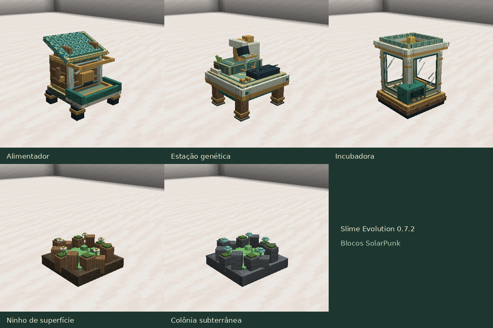

Slime Evolution 0.7.2
Atualizações por versão · Guia do mod

Os blocos receberam modelos com volume e materiais SolarPunk: madeira, cerâmica, latão, vidro e vegetação. O alimentador tem reservatório, bandeja frontal, alavanca e cobertura solar inclinada. A estação genética virou uma bancada com microscópio, cartucho de pesquisa, controles e um pequeno vaso. A incubadora tem câmara envidraçada, berço interno, bobinas e console frontal.
As três máquinas ficam voltadas para o jogador ao serem colocadas, com colisões ajustadas aos novos formatos. Os monitores da estação e da incubadora animam enquanto o processamento realmente avança; ficam parados ao pausar ou concluir. Detalhes emissivos permanecem legíveis no escuro.
Ninhos de superfície têm raízes, musgo, flores e gel; colônias subterrâneas combinam pedras, gel e fungos luminosos. As mesmas formas aparecem nos itens das máquinas, no inventário e nas mãos.
Receitas, custos e duração dos trabalhos permanecem iguais. Blocos antigos carregam voltados para o norte; os inventários são preservados. O catálogo continua com 47 espécies.